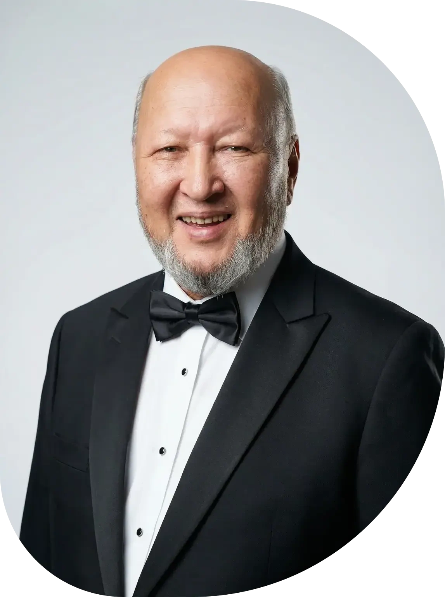
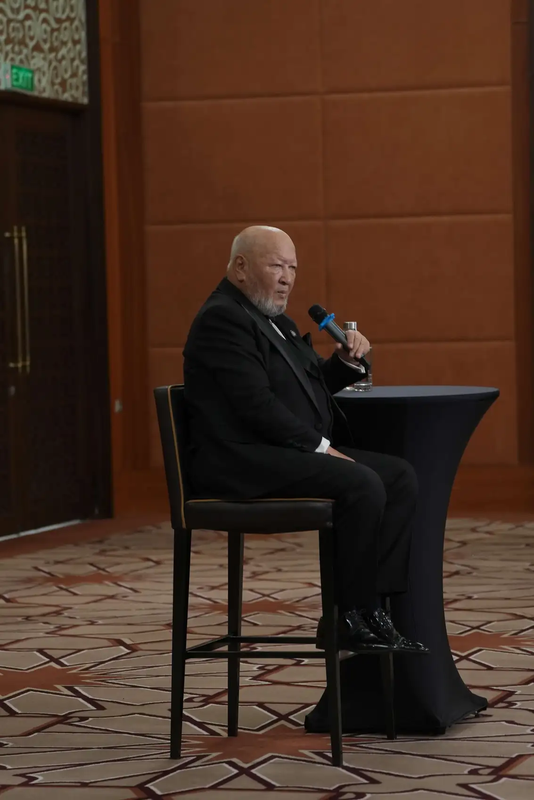
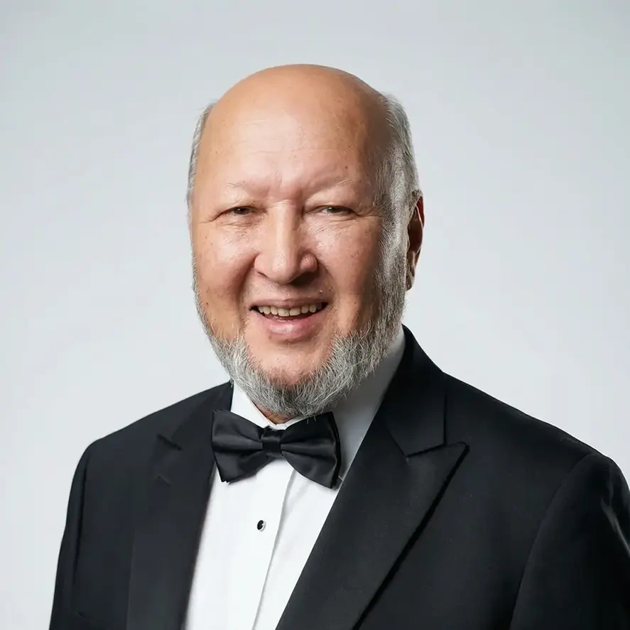
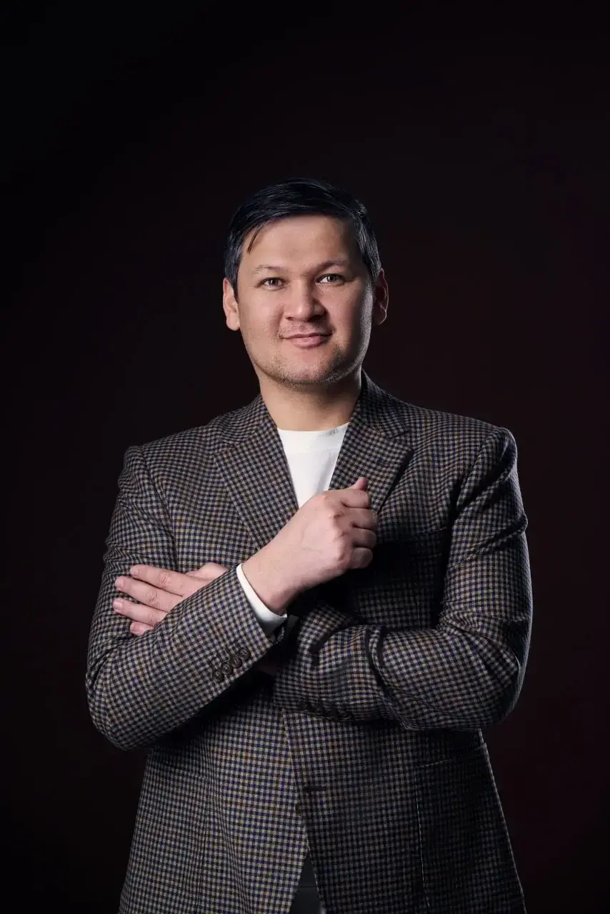
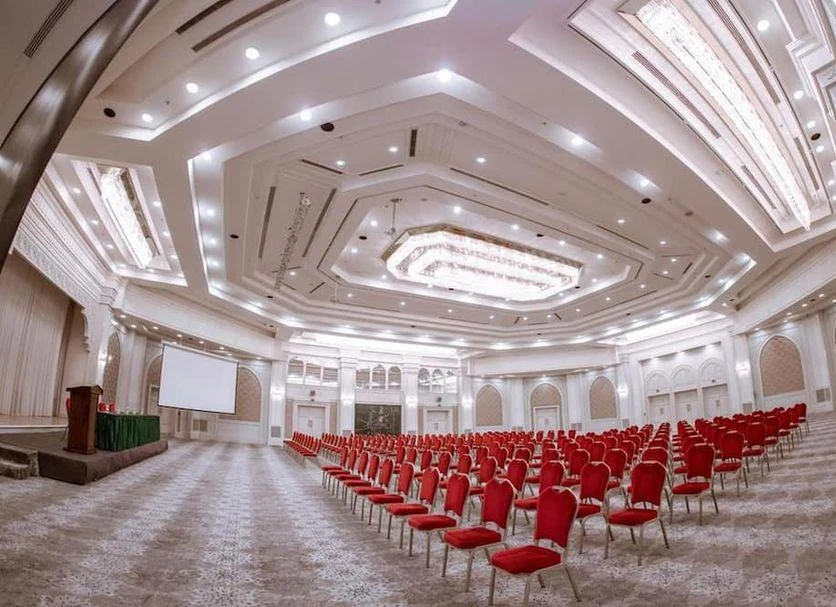
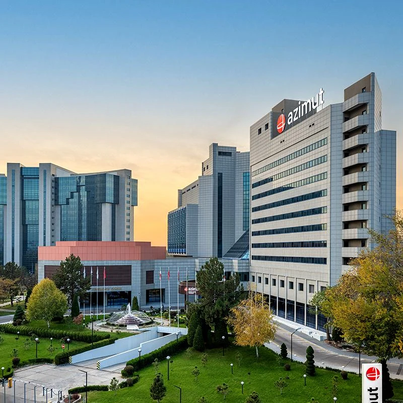

Ko‘p mehnat.
Kutilgandan kam natija.
Doim band bo‘lsangiz ham, muhim maqsadlaringiz ortga surilib qolayotgan bo‘lsa.
Kengroq fikrlang. Dadilroq qaror qiling.
Biznesingizni yangi bosqichga olib chiqing.
O‘z biznesingizdagi muhim masala bilan keling. Maqsadingizni aniqlashtiring, kechiktirayotgan qaroringizni tahlil qiling va keyingi 30 kun uchun shaxsiy harakat rejasini tuzing.

Mirzakarim Norbekov
& Shohruh Norbekov
Tajriba
Amaliy tadqiqotlar
Davlatlarda faoliyat
Norbekov tizimida multimillioner darajasiga yetishgan tadbirkorlar
Mirzakarim Norbekov kitoblarini o‘qiganlar
Ko‘proq bilishning o‘zi yetarli bo‘lmagan payt keladi. Endi o‘z qarashlaringiz, qarorlaringiz va harakatlaringiz bilan ishlash vaqti.
Doim band bo‘lsangiz ham, muhim maqsadlaringiz ortga surilib qolayotgan bo‘lsa.
Keyingi darajaga chiqishni istab, muhim qarorni qabul qilishni cho‘zayotgan bo‘lsangiz.
Nima qilishni bilsangiz-u, birinchi qadam uchun qulay sharoit kutayotgan bo‘lsangiz.
Uch kun davomida diqqat markazida — siz, sizning qarorlaringiz va keyingi qadamingiz.
Uch kunning markazida — sizning bugungi vaziyatingiz. O‘sishingizni nima to‘xtatyapti, qaysi qaror ochiq qolmoqda va endi nimadan boshlaysiz? Har bir kun keyingi qadamga tayyorlaydi.
Maqsad va ichki
cheklovlar xaritasi
Bitta muhim qaror
bo‘yicha yozma tahlil
30 kunlik reja.
Birinchi haftaning qadamlari.

Biznesingizga ajratgan
e’tiboringizni uch kun
o‘zingizga qarating.
Keyingi bosqich ko‘rinib turibdi. Sizni nima to‘xtatyapti?
Kattaroq maqsad oldida «hali tayyor emasman» degan fikr paydo bo‘ladi. Birinchi kun — shu ikkilanish ortidagi qarashlarni tahlil qilish va o‘zingiz uchun muhim yo‘nalishni tanlash haqida.
Qaysi muhim qarorni yana «keyin»ga qoldiryapsiz?
Ikkinchi kuni o‘zingiz uchun dolzarb bitta tanlov bilan ishlaysiz. Uni kechiktirayotgan xavotirlarni, qaror uchun muhim mezonlarni va o‘z mas’uliyatingizni aniqlashtirasiz.
Intensivdan qaytgach, birinchi ish kunini nimadan boshlaysiz?
Uchinchi kuni maqsad va qaroringizni kundalik harakatga bog‘laysiz. Keyingi 30 kun uchun reja tuzib, dastlabki 7 kunda bajaradigan qadamlaringizni alohida belgilaysiz.
Intensivga o‘zingiz uchun muhim bitta savol bilan keling.
Ishtirok formatini tanlash
NORBEKOV TIZIMI ASOSCHISINorbekov tizimi asoschisi, yozuvchi va ustoz. Shaxsiy rivojlanish yo‘nalishida 40 yildan ortiq tajriba.

MASTERS CLUB MURABBIYINorbekov tizimi davomchisi va “Masters Club” xalqaro klubi yetakchi murabbiyi. O‘zbekiston Psixologlar uyushmasi a’zosi.
Ustoz bilan jonli muloqot, amaliy mashqlar va tajriba almashish. Avvalgi tadbirlardan haqiqiy lavhalar.
Avvalgi intensivlardan haqiqiy lavhalar.


UCH KUNLIK UCHRASHUV MANZILI
Amir Temur zali
Mo‘ljal: Bodomzor metrosi yonida
Materiallarni bemalol, qayta-qayta ko‘rib o‘rganmoqchimisiz? Premiumni tanlang. Darsda eng oldi qatorda o‘tirib, keyingi kurslarga eng zo‘r chegirmalarni olishni istasangiz — sizga VIP kerak!
| Imkoniyat | Onlayn | Standart | Premium | VIP |
|---|
Tadbirkorlar, rahbarlar hamda o‘z qarashlari, qarorlari va shaxsiy o‘sishi ustida ishlashni istagan insonlar uchun. Dastur biznes psixologiyasi va shaxsiy rivojlanishga yo‘naltirilgan.
Intensiv 2026-yil 18, 19 va 20-dekabr kunlari, har kuni Toshkent vaqti bilan 17:00 dan 21:00 gacha bo‘lib o‘tadi. Manzil: Azimut Grand Hotel, Amir Temur zali. Mo‘ljal: Bodomzor metrosi yonida.
Ha. Onlayn tarif uch kunlik intensivda masofadan ishtirok etish, networking uchun yopiq guruh va intensiv videoyozuvlarini 14 kun qayta ko‘rishni o‘z ichiga oladi. Ulanish tartibini menejer tushuntiradi.
Onlayn va Standart tariflarda — 14 kun, Premium tarifida — 1 oy, VIP tarifida — 2 oy davomida intensiv videoyozuvlarini qayta ko‘rish mumkin.
Ha, barcha tariflarda sovg‘a sifatida beriladi: Onlayn va Standart — 1 oy, Premium — 2 oy, VIP — 3 oy.
«Ro‘yxatdan o‘tish» tugmasini bosing yoki tarifni tanlang. Ochilgan oynada ismingiz va telefon raqamingizni kiritishingiz, tarifni o‘zgartirishingiz mumkin. Ariza yuborish imkoniyati oynada ko‘rsatiladi. Menejer ishtirok shartlari va to‘lov tartibini siz bilan kelishadi.
Uch kun — maqsadingiz, muhim qaroringiz va keyingi 30 kunlik rejangiz ustida ishlash uchun.